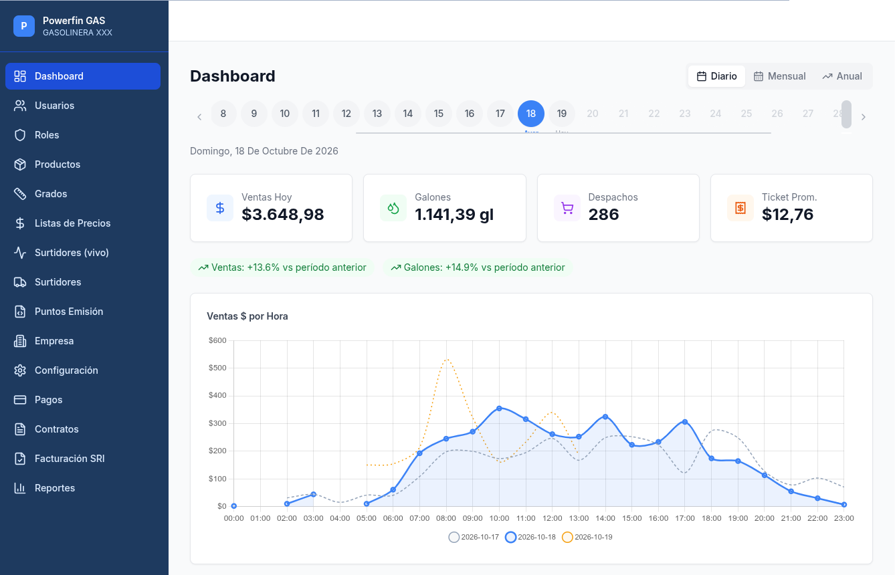
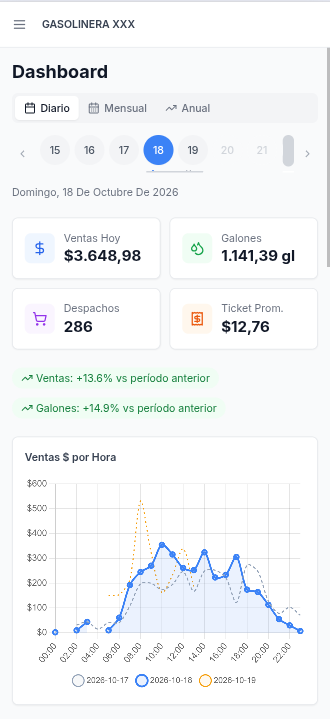

Toda la operación de tu estación de servicio en una sola plataforma:
del surtidor al ticket, del turno al balance contable.
Control en tiempo real de cada pistola, isla y turno
Facturación electrónica SRI integrada, sin procesos manuales
Contabilidad, cartera y crédito en el mismo sistema
Hardware Wayne Fusion validado en operación real
696Pruebas automatizadas
5Países con Powerfin
<1 hRecuperación ante desastre
24/7Operación de pista
Ingeniería de Sistemas GRISBI Cía. Ltda.www.grisbi.com.ec
El costo de operar a ciegas
Por qué ahora
Lo que no se mide, se pierde en la pista.
Una estación de servicio mueve dinero todos los minutos. Cuando el control
vive en cuadernos, hojas de cálculo y memoria del personal, la pérdida no
aparece como un gasto: aparece como una diferencia que nadie sabe explicar.
01
Mermas sin trazabilidad
Diferencias entre lo despachado y lo facturado que se detectan a fin de mes,
cuando ya no hay forma de saber en qué turno ni en qué pistola ocurrieron.
Costo típico: 0,2% – 0,8% del volumen
02
Cuadre de turno manual
Dos horas de cierre, sumas a mano, transferencias y depósitos que no
cuadran. El despachador se queda más tiempo y el gerente confía en un papel.
Costo típico: 60 horas/mes de operación
03
Facturas que no llegan al SRI
Ventas que nacen sin comprobante, claves de acceso vencidas, reintentos
manuales. El problema aparece semanas después, cuando el cliente reclama.
Riesgo: multas, notas de crédito y ventas no recuperables
04
Crédito sin control de cupo
Clientes corporativos y sector público con consumos que superan el cupo
autorizado. La cartera se descubre al momento de cobrar, no al despachar.
Riesgo: capital de trabajo inmovilizado
05
Despachos que quedan “en el aire”
El celular del despachador se apaga, la red falla, el surtidor queda en
pausa. La venta existe en el hardware pero no en el sistema.
Riesgo: pérdida directa no registrada
06
Reportes que llegan tarde
El gerente pide ventas por producto, por forma de pago, por turno.
La respuesta llega en tres días y ya no sirve para decidir.
Costo: decisiones con datos de la semana pasada
El problema no es el software. Es que la pista, la caja, la facturación
y la contabilidad viven en cuatro lugares distintos. Powerfin los une.
Powerfin ERP + POS GAS · Propuesta comercialGRISBI Cía. Ltda.
2
La solución
Arquitectura
Cuatro piezas. Una sola verdad.
Cada componente tiene un trabajo y solo uno. Ninguno duplica la
responsabilidad del otro. Eso es lo que hace que el sistema sea rápido,
auditable y fácil de soportar.
ERP
Powerfin ERP
Contabilidad, cartera, compras, nómina, facturación electrónica y reportería. La fuente de verdad del negocio.
▼ ▼ ▼
POS
Powerfin POS GAS
La interfaz táctil del despachador. Vende, cobra, factura e imprime. Corre en celular o tablet, sin instalar nada.
▼ ▼ ▼
BRIDGE
FusionBridge
Traduce entre el software y el hardware. Habla el protocolo nativo del controlador Wayne y envía los tickets a las impresoras de isla.
▼ ▼ ▼
HW
Controlador y dispensadores
Wayne Fusion / Synergy y las impresoras térmicas de red. Sin modificaciones al hardware existente.
1Conexión TCP persistente con el controlador
0Bases de datos duplicadas entre sistemas
<1 sLatencia de eventos de surtidor a pantalla
“El ERP es el cerebro. El bridge es el puente.
El POS son las manos del despachador.”
AuditableCada dato tiene un solo origen
SoportableUn fallo se aísla en su capa
EscalableMás pistolas sin rehacer todo
Powerfin ERP + POS GAS · Propuesta comercialGRISBI Cía. Ltda.
3
Powerfin ERP
El cerebro del negocio
La contabilidad deja de ser un cierre de mes.
Powerfin no es un módulo contable pegado a un POS. Es un ERP completo,
implantado en 26 empresas a nivel nacional e internacional, que convierte
cada despacho en un asiento,
cada cobro en un movimiento bancario y cada factura en un documento
tributario válido.
Bloque
Módulos
Gestión financiera
Contabilidad General · Cuentas por Cobrar · Cuentas por Pagar ·
Control Bancario · Activos Fijos · Presupuesto Financiero ·
Control Presupuestal · Caja Chica · Flujo de Caja
Compras · Inventario y Almacenes · Logística · Producción ·
Taller y órdenes de trabajo
Personas
Nómina y roles de pago · Recursos Humanos
Analítica
Reportería · Indicadores · Business Intelligence · Alertas y notificaciones
Financiero extendido
Préstamos · Inversiones · Originación de cartera · Confirming y Factoring
Plataforma
Servicios Web REST (API-KEY + JWT) · Movilidad · Multimoneda ·
Multilingüe · Parametrización por empresa
Java 8+Cualquier sistema operativo
PostgreSQL9.6 o superior
NavegadorSin instalar clientes
API RESTIntegración con terceros
Menos trabajo manual
El asiento nace del despacho. Se elimina la re-digitación y el cierre
deja de depender de una hoja de cálculo.
Cartera bajo control
Antigüedad de saldos, cobranza y cupo por cliente en el mismo lugar
donde se autoriza el despacho.
Decisiones con dato vivo
Presupuesto contra real, márgenes por producto y flujo de caja
actualizado, sin esperar el cierre de mes.
Multiempresa, multimoneda y multilingüe. La misma plataforma
opera varias razones sociales y sucursales sin duplicar infraestructura.
Powerfin ERP + POS GAS · Propuesta comercialGRISBI Cía. Ltda.
4
Powerfin POS GAS · Operación
El turno del despachador
Seis pasos. Sin papel, sin sumas a mano.
1
Ingreso y apertura de turno
El despachador entra con su usuario y PIN. Registra las lecturas de
medidores mecánicos y abre el turno. Desde ese momento, todo lo que
ocurra en la pista queda asociado a su nombre.
2
Pantalla de surtidores en vivo
Estado de cada pistola en tiempo real: libre, autorizada, despachando,
pausada. Sin recargar la página. El despachador ve la pista completa
desde su celular o tablet.
3
Nueva venta
Preset por monto, por volumen o por llenado completo. Búsqueda del
cliente por cédula, RUC, placa o nombre. Validación de cédula en línea.
Vehículos internos predefinidos con balanceo automático.
4
Autorización y despacho
Un toque autoriza la pistola. El progreso de galones y dólares se
actualiza en vivo. El despachador puede detener, limpiar o destrabar
un surtidor en pausa desde la misma pantalla.
5
Cobro y factura
Efectivo, tarjeta, transferencia, Yalobox, pago mixto o crédito con
cupo. La factura electrónica se genera con clave de acceso de 49
dígitos y se envía al SRI. El ticket sale por la impresora de la isla.
6
Cierre de turno
Cuadre automático: ventas, cobros, transferencias, depósitos a caja
fuerte y lecturas finales. El sistema muestra sobrantes o faltantes
antes de cerrar. El reporte se exporta en PDF o Excel.
Antes
Cuadre en cuaderno y calculadora
Factura emitida “después, cuando haya tiempo”
Cliente identificado por el nombre que dio
Diferencia de galones descubierta a fin de mes
Con Powerfin
Cuadre automático al cerrar el turno
Factura electrónica al momento del cobro
Cliente validado por cédula, RUC o placa
Cada galón trazado a su turno y su pistola
Todo ocurre en el navegador. Sin instalar aplicaciones, sin
licencias por dispositivo, sin depender de una PC fija en la isla.
Powerfin ERP + POS GAS · Propuesta comercialGRISBI Cía. Ltda.
5
Powerfin POS GAS · Capacidades
Lo que resuelve
Diseñado para la pista, no adaptado a ella.
Pista y hardware
Estado en tiempo real de cada pistola mediante eventos SSE
Preset por monto, volumen o llenado completo
Detener, limpiar y destrabar surtidores desde la pantalla
Destrabe de surtidor pausado sin reiniciar el controlador
Multi-isla: cada isla con su propia impresora térmica
Cliente y precios
Búsqueda por cédula, RUC, placa o nombre
Validación de cédula con módulo 10 y estructura de RUC
Consulta y actualización de datos desde registros oficiales
Listas de precios con prioridad vehículo › persona › general
Vehículos internos predefinidos con balanceo por despachos del día
Cobro y crédito
Pago mixto: efectivo + tarjeta + transferencia en una sola venta
Crédito con cupo por contrato y vehículo
Sector público: facturación en lote y cuenta por cobrar
Yalobox y otros métodos configurables desde el admin
Bloqueo de cobro en $0,00 y validaciones anti-error
Fiscal y caja
Factura electrónica SRI vía Key49, con clave de 49 dígitos
Reintentos automáticos y regeneración de clave al cruzar medianoche
Monitor SRI con reconciliación y estados por factura
Ticket ESC/POS con empresa, cliente, subsidio, IVA y clave
Cuadre completo: transferencias, depósitos y medidores mecánicos
Resiliencia operativa
Recuperación de despachos: si el dispositivo se desconecta, la venta se reconcilia al volver
Limpieza de huérfanos: detección de despachos sin cobro y liberación controlada
Trazabilidad completa: cada cambio de estado queda registrado con fecha y usuario
Errores visibles: el sistema informa la causa real, nunca un mensaje genérico
Sin fallbacks silenciosos. Si algo falla, el sistema lo dice y lo
registra. Nunca “arregla” el problema por detrás ni inventa un resultado.
Powerfin ERP + POS GAS · Propuesta comercialGRISBI Cía. Ltda.
6
Powerfin Admin · Control
Para el gerente y el supervisor
El negocio completo, en una pantalla.
Un portal independiente del POS, con permisos por rol, para mirar la
operación sin interrumpirla y para administrar el sistema sin tocar la
base de datos.


El mismo panel en computador y en celular. Ventas, galones,
despachos y ticket promedio, con comparación contra el período anterior.
Dashboard
KPIs de ventas, galones, ticket promedio y margen. Comparación por
día, semana, mes y año. Gráficas por producto y forma de pago.
Reportes
Ventas, despachos, turnos y cuadre de caja. Filtros por fecha,
usuario, turno, contrato y producto. Exportación a PDF y Excel.
Monitor SRI
Seguimiento de cada factura: pendiente, enviada, notificada,
autorizada o rechazada. Detecta comprobantes que no llegaron.
Administración
Usuarios, roles y permisos; productos, grados y listas de precios;
surtidores y pistolas; puntos de emisión y formas de pago.
Contratos de crédito
Alta, cupo, consumo, liquidación y estado. Visibilidad de la cartera
antes de que se convierta en un problema de cobranza.
Auditoría
Registro de cambios, borrado lógico en entidades críticas y
trazabilidad por usuario.
El dato nace una vez, en la pista, y se usa en toda la empresa.
Roles: ADMIN con acceso total · SUPERVISOR con lectura y exportación ·
DESPACHADOR solo con operación de pista.
Powerfin ERP + POS GAS · Propuesta comercialGRISBI Cía. Ltda.
7
Hardware e integración
Sin cajas negras
Habla el idioma del surtidor.
Powerfin POS no “estima” lo que pasó en la pista: lo recibe del controlador.
La integración con Wayne Fusion está validada contra hardware real en
operación, no contra un simulador.
Controlador Wayne Fusion / Synergy
Protocolo nativo sobre TCP, conexión persistente, keep-alive y
reconexión automática con backoff exponencial. Eventos de estado,
transacción y progreso en tiempo real.
Validado con firmware Rel-5.19.1
Impresoras térmicas de isla
Impresión ESC/POS por socket TCP directo, sin CUPS ni drivers.
Plantilla configurable desde el sistema y reimpresión con la fecha
y hora originales del despacho.
Una impresora por isla, configurable en BD
Servidor local
Instalación directa sobre Debian 12 con servicios systemd. Sin Docker,
para garantizar acceso directo a la red de la estación y al hardware.
Operación autónoma en la LAN
Celulares y tablets
PWA instalable desde el navegador, sin app store ni licencias por
dispositivo. Funciona en Chrome, Edge, Safari y Firefox.
Cualquier dispositivo de la estación
Requisitos de red en la estación
TCPPuerto del controlador Wayne accesible desde el servidor
IP fijaPara servidor, controlador e impresoras de isla
TCP 9100Salida hacia las impresoras térmicas de red
UPSRespaldo eléctrico para servidor y switch
Tu hardware no se toca. Powerfin se integra al controlador y a las
impresoras existentes. Si la estación ya opera con Wayne, no hay que
reemplazar surtidores ni cableado.
Powerfin ERP + POS GAS · Propuesta comercialGRISBI Cía. Ltda.
8
Continuidad y soporte
Cuando algo falla
Un plan escrito, no una promesa.
Powerfin opera bajo un Acuerdo de Nivel de Servicio y un Plan de
Recuperación de Desastres documentados, con replicación geográfica y
procedimientos probados.
Disponibilidad y respaldo
95% de disponibilidad mensual comprometida
Replicación geográfica entre dos regiones
Respaldos periódicos fuera de la infraestructura principal
Recuperación objetivo menor a 1 hora ante desastre
Mantenimientos programados notificados con 48 horas
Soporte técnico
Lunes a viernes: 8 horas de atención en línea
Sábados y domingos: 4 horas de atención en línea
Movilización a la estación: 1 a 2 horas
Canales: tickets, correo y teléfono
Respuesta inicial: 5 a 10 minutos
Escalamiento: tres niveles hasta gerencia
Tiempos comprometidos
Severidad
Descripción
Resolución
Crítico
Sistema inoperativo o función crítica no disponible
2 horas
Alto
Función importante afectada, con solución alternativa
1 hora
Medio
Funcionalidad limitada, no crítica para operar
30 minutos
Bajo
Consultas, mejoras y problemas menores
15 minutos
Cómo se activa el plan
1 · Se declara el desastre
Si el acceso al servidor supera las 2 horas, el equipo responsable
activa el plan de forma oficial.
2 · Se promueve la réplica
Se detiene la replicación, se promueve la región de respaldo y se
levanta la aplicación.
3 · Se redirige el acceso
El dominio apunta a la nueva IP y se notifica al cliente el
restablecimiento del servicio.
Cobertura: la movilización de 1 a 2 horas aplica en Cuenca y su
zona de influencia. Fuera de esa zona, tiempos y viáticos se acuerdan
con el cliente.
Powerfin ERP + POS GAS · Propuesta comercialGRISBI Cía. Ltda.
9
Inversión y financiación
Inversión
Cuatro rubros. Sin letra chica.
ERP Powerfin + POS GAS + Admin. Usted sabe exactamente qué paga una vez,
qué paga cada mes y qué se cotiza aparte.
#
Rubro
Tipo de pago
Monto
1
Instalación, implementación y capacitación
Una vez, al inicio
$1.200
2
Precio del sistema (ERP + POS + Admin)
Una vez, al inicio o financiado
$7.500
3
Soporte mensual y actualizaciones menores
Mensual
$175/mes
4
Actualizaciones mayores
Cuando se pacten
20% del sistema
El rubro 4 equivale a $1.500 por versión mayor (cada 3–4 años) y es
opcional. Los cambios regulatorios del SRI están incluidos en el soporte.
Cómo puede pagar el sistema
Modalidad
Pago inicial
Cuota mensual
Total en el plazo
Costo a 5 años
Contado
$8.875
$175
—
$19.200
Financiado 24 meses
$3.157
$457
$13.679
$19.979
Financiado 36 meses
$3.074
$374
$16.174
$20.374
Financiado 48 meses
$3.033
$333
$18.684
$20.784
Pago inicial = instalación + 20% del sistema + primera cuota;
el sistema se financia a 12% anual. Total en el plazo = día 0 más
las cuotas de ese plazo. Costo a 5 años = la misma modalidad llevada
a 60 meses de soporte: es la única columna comparable entre filas, y
confirma que el contado es el más barato ($19.200). El total del plazo es
más bajo solo porque el plazo es más corto, no porque la modalidad cueste
menos.
El soporte incluye: hosting, respaldos, monitoreo, Key49 hasta
3.000 facturas/mes, actualizaciones menores y cambios regulatorios del SRI.
No incluye hardware, consumibles, certificado digital, IVA, módulos
nuevos ni actualizaciones mayores.
El precio se ajusta al tamaño de la estación
Tramo
Pistolas
Factor
Instalación
Sistema
Soporte/mes
Pequeña
1 – 4
0,85×
$1.020
$6.375
$149
Mediana
5 – 8
1,00×
$1.200
$7.500
$175
Grande
9 – 16
1,30×
$1.560
$9.750
$228
Extra grande
17 – 24
1,60×
$1.920
$12.000
$280
25+ pistolas: cotización a medida. En redes, la licencia baja por volumen:
2.ª y 3.ª estación al 60%; 4.ª a 6.ª al 50%; 7.ª en adelante al 40%.
Instalación y soporte se cobran por estación.
Powerfin ERP + POS GAS · Propuesta comercialGRISBI Cía. Ltda.
10
Implementación
De la firma al primer cierre
Cuatro a seis semanas. Acompañados.
Semana 1
Levantamiento y preparación
Revisión de red, servidor y controlador. Inventario de surtidores,
pistolas, impresoras y usuarios. Definición de puntos de emisión y
responsables.
Semana 2
Configuración del ERP
Empresa, impuestos, plan de cuentas, formas de pago, productos,
grados, listas de precios y usuarios con sus permisos.
Semana 3
Integración con la pista
Conexión con el controlador Wayne, mapeo de pistolas, pruebas de
autorización, despacho, impresión y eventos en tiempo real.
Semana 4
Migración y capacitación
Carga de clientes, vehículos y saldos iniciales. Capacitación al
personal en dos sesiones, con material de apoyo.
Semanas 5 y 6
Marcha blanca y go-live
Operación paralela controlada, ajustes finos y acompañamiento en
el primer cierre de turno y la primera facturación electrónica.
Incluido
ERP Powerfin + POS GAS + Admin (licencia de uso)
Instalación, implementación y capacitación ($1.200)
Facturación electrónica Key49 incluida
Hosting, respaldos diarios y actualizaciones
Integración con controlador e impresoras
Migración de hasta 50.000 registros
Capacitación de 8 horas en dos sesiones
Acompañamiento en el primer cierre
Soporte L-V 8 h y fines de semana 4 h
Movilización a la estación en 1 a 2 horas
No incluido
Dispensadores, controlador, impresoras, servidor, red y UPS
Consumibles: rollos de papel y tintas
Certificado digital y firma electrónica del contribuyente
Viáticos y traslados fuera de Cuenca
Desarrollos a medida
IVA
Un solo proveedor responsable del resultado. No coordinamos con
un tercero para la pista, otro para la facturación y otro para la
contabilidad: es el mismo equipo.
Powerfin ERP + POS GAS · Propuesta comercialGRISBI Cía. Ltda.
11
Por qué GRISBI
Quiénes somos
Diez años construyendo software que opera.
Ingeniería de Sistemas GRISBI Cía. Ltda. es una empresa ecuatoriana
especializada en software de gestión, facturación electrónica e
integración con hardware. Powerfin se implanta hoy en 26 empresas a nivel
nacional e internacional.
Lo que nos diferencia
Producto propio, no reventa. Desarrollamos el ERP, el POS y el bridge.
Integración real con hardware. Validada con controladores Wayne en operación.
Facturación electrónica en producción. No es un módulo teórico.
Un solo responsable. Software, hardware, soporte y contabilidad.
Documentación y pruebas. 696 pruebas automatizadas y procedimientos escritos.
Experiencia del grupo
Estaciones de servicio: NeoGas y NeoGuayas operan con Powerfin
Facturación electrónica y cumplimiento tributario
Cartera, crédito y sector público
Plataformas de fidelización y pagos
Integración de hardware industrial y redes locales
Estaciones de servicio que ya operan con Powerfin
Siguiente paso
Agendemos una demostración con tus propios datos.
En 45 minutos revisamos tu pista, tu operación actual y el número de
pistolas. Salimos con una cotización exacta y un plan de implementación.
Contacto
Patricio Valarezo · Gerente General
Teléfono / WhatsApp
099 383 2368
Correo
pvalarezo@grisbi.com.ec
Web
www.grisbi.com.ec
Dirección
Carlos Vintimilla 130 y Luis Moreno Mora · Cuenca
Vigencia de la oferta
30 días
GRISBI Cía. Ltda. · RUC 0190411826001 · Precios en USD, no incluyen IVA.
Aplican el SLA y el DRP vigentes. Documento informativo; no constituye
oferta contractual hasta la firma de la propuesta económica definitiva.